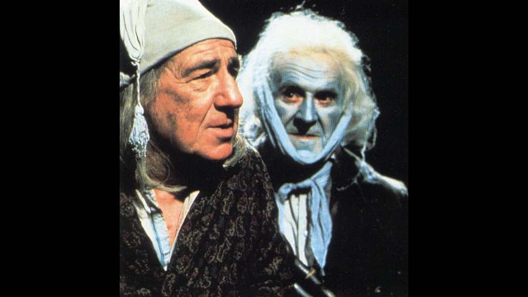

1977

CAST
Ebenezer Scrooge
-
Michael Hordern
Bob Cratchit
-
Clive Merrison
Mrs. Cratchit
-
Carol MacReady
Tiny Tim Cratchit
-
Timothy Chasin
Fred (Scrooge's nephew)
-
Paul Copley
Fred's wife
-
Maev Alexander
Belle (Scrooge's unappreciated fiancée)
-
Zoë Wanamaker
Martha Cratchit
-
Zelah Clarke
Belinda Cratchit
-
Claire McLellan
Peter Cratchit
-
David Ronder
Marley's Ghost
-
John Le Mesurier
Spirit of Christmas Past
-
Patricia Quinn
Spirit of Christmas Present
-
Bernard Lee
Spirit of Christmas Future
-
Michael Mulcaster
Scrooge as a Young Man
-
John Salthouse
Scrooge as a Schoolboy
-
Dorian Healy
Fan "Fanny" Scrooge
-
Tracey Childs
Old Fezziwig
-
Will Stampe
John
-
Stephen Churchett
Topper
-
Christopher Biggins
Little Blonde
-
Tricia George
Caroline
-
Veronica Doran
Caroline's Husband
-
John Grillo
Mrs. Dilber
-
June Brown
Undertaker's Man
-
David Hatton
Charity Gentleman
-
John Ringham
Businessman
-
Brian Hayes
Businessman
-
Roy Desmond
Dick Wilkins
-
Nicholas John
Carol singer
-
David Corti
Narrator
-
Brian Blessed (uncredited)
CREATIVE TEAM
Director
-
Moira Armstrong
Screenplay
-
Elaine Morgan
PRODUCTION
This short, one hour version was shot entirely on video for TV by the BBC and broadcast in the UK on two occasions - Christmas Eve 1977 and 1979. Because of the proliferation of other versions, the BBC has never made a full-length film and so this abridgment continues to live as their only color version and has been issued on VHS and DVD.
Michael Hordern (Ebenezer Scrooge) previously played Jacob Marley in versions of A Christmas Carol in 1951 and 1971.
Michael Hordern (Ebenezer Scrooge) previously played Jacob Marley in versions of A Christmas Carol in 1951 and 1971.